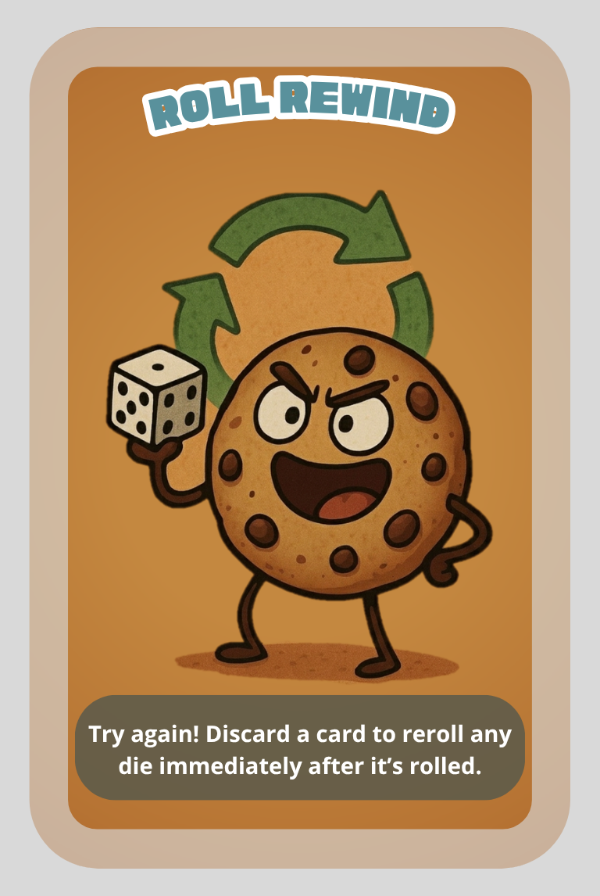

The re-roll was banned from the royal gaming table in 1687, reinstated in 1688, and quietly banned again after the incident with the Earl.
Discard a card to reroll any single die result - yours or another player's - immediately after it's rolled. Play as a reaction.